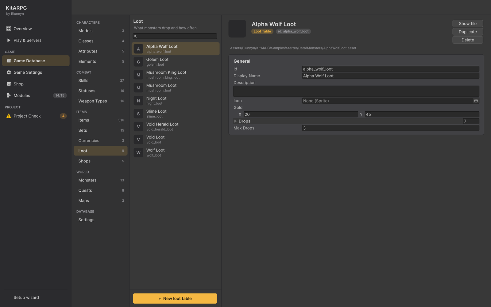

Botín
Una tabla de botín dice qué suelta un monstruo cuando muere: una cantidad de oro y una lista de ítems, cada uno con su probabilidad. Esta página cubre cada campo de una tabla de botín, cómo se tira el botín, los objetos de misión, cómo llega el botín al jugador, y los ajustes y stats que cambian las probabilidades.
Qué es una tabla de botín
Una tabla de botín es un asset LootTable en la Game Database. Un monstruo apunta a una en su campo Loot (loot). Varios monstruos pueden compartir una tabla: el Slime y el Giant Slime de la muestra usan los dos Slime Loot.
Cuando un monstruo muere, el servidor tira su tabla una vez para el jugador que se ganó la muerte. El botín es solo para ese jugador: nadie más lo ve ni puede tomarlo.
Dónde está en el editor

Game Database > Items > Loot. La lista muestra cada tabla; + New loot table crea una en una carpeta Loot junto a la base de datos y la agrega a la lista lootTables de la base de datos. También puedes usar Create > KitARPG > Loot Table en la ventana Project.
En la tarjeta de una tabla, cada entrada de botín es una fila con el ícono del ítem. La columna de probabilidad muestra Chance %: los datos guardan de 0 a 1, el editor muestra y recibe porcentajes.
Campos
La tabla
| Campo | Qué hace | Por defecto |
|---|---|---|
| Id, Display Name, Description, Icon | Comunes a todo asset de la base de datos. En las tablas de botín solo importa el id. | Del nombre del archivo |
Gold (gold) |
Oro mínimo y máximo que suelta (x e y, los dos incluidos). | 1 a 5 |
Drops (drops) |
Los ítems que puede soltar, en orden. | Vacío |
Max Drops (maxDrops) |
El máximo de ítems que puede soltar una muerte. 0 significa sin límite. | 3 |
Cada entrada
| Campo | Qué hace | Por defecto |
|---|---|---|
Item (item) |
El ítem. Project Check avisa de una entrada sin ítem. | Ninguno |
Chance (chance) |
Probabilidad de que caiga, mostrada como porcentaje (de 0 a 100). | 0 |
Min Amount (minAmount) |
La menor cantidad del ítem cuando cae. | 0 |
Max Amount (maxAmount) |
La mayor cantidad del ítem cuando cae. | 0 |
Quest (quest) |
Solo cae para un asesino que tiene esta misión y todavía necesita el ítem. Vacío: cae para cualquiera. | Ninguna |
La cantidad es un número entero al azar de Min Amount a Max Amount, los dos incluidos, y nunca menos de 1. Una entrada con los dos en 0 suelta uno.
Cómo se tira una muerte
Cuando un monstruo muere, el componente Rewards del servidor le paga al jugador que hizo más daño:
- Experiencia: va al asesino, o se reparte con los miembros del grupo cercanos. Consulta Monstruos.
- Oro: una cantidad al azar de Gold, por la tasa de oro del servidor. Un recaudador de gremio cercano se lleva primero su parte. Consulta Recaudadores.
- Ítems: cada entrada se revisa en el orden de la lista:
- Una entrada con Quest se saltea salvo que el asesino tenga esa misión abierta y lleve menos del ítem de lo que pide su objetivo de recolección.
- Una tirada al azar contra la probabilidad de la entrada (consulta Probabilidades). Si acierta, se agregan el ítem y su cantidad.
- Cuando la cantidad de ítems agregados llega a Max Drops, el resto de la lista no se tira.
- Entrega: el oro y los ítems llegan al jugador de la forma que dice Game Settings > Loot (consulta Cómo llega el botín al jugador).
Como la lista se detiene en Max Drops, el orden importa. Pon primero las entradas que nunca quieres que se corten. La muestra pone sus objetos de misión arriba de Slime Loot y Mushroom Loot por eso.
Probabilidades
Para cada ítem que no es objeto de misión, la probabilidad que se usa es:
chance x (1 + the killer's Loot Chance stat) x the server's loot rate, con un tope de 100 %.
- Loot Chance (
lootChance) es una stat. 0,1 es +10 % de cada probabilidad, no +10 puntos: un botín de 5 % pasa a 5,5 %. En la muestra, cada punto de Luck da +0,5 %. - La tasa de botín es Game Settings > Rates > Loot Rate (
lootRate, por defecto 1) por un evento de tasas que un GM puede haber empezado con/rates loot 2 60. - Los objetos de misión conservan su propia probabilidad. La suerte y las tasas nunca hacen más fácil una misión.
El oro usa Gold Rate (goldRate, por defecto 1) de la misma forma. Consulta Game Settings y Comandos de GM.
Cómo llega el botín al jugador
Game Settings > Loot tiene dos ajustes (GameInstance, en el prefab KitNetwork):
| Campo | Qué hace | Por defecto |
|---|---|---|
Loot Mode (lootMode) |
Cómo reciben los jugadores lo que sueltan los monstruos. Solo lo ve el jugador que se ganó la muerte. | Ground |
Auto Gold (autoGold) |
El oro va directo al jugador. Apagado: cae como los ítems, en el suelo o en el cuerpo. | Prendido |
Los modos de botín:
| Modo | Lo que ve el jugador |
|---|---|
| Ground | Cada ítem cae al suelo junto al monstruo, esparcido en unos 1,2 m, como su ícono con su nombre en el color de su rareza. Hacer clic en uno camina hasta ahí y lo recoge. El oro (cuando Auto Gold está apagado) cae como una pila. |
| Corpse | Los ítems se quedan en el cuerpo del monstruo, que yace gris donde murió. Hacer clic en él abre la ventana de botín, para tomar los ítems de a uno o todos. |
| Automatic | Los ítems van directo a la bolsa. Lo que no cabe cae al suelo. |
Detalles que se aplican en todos los modos:
- El botín espera 90 segundos y luego desaparece. También desaparece cuando su dueño deja el mapa.
- El jugador lo recoge a menos de 2 m (un poco más mientras la ventana de botín está abierta).
- El botín puede pasar la bolsa de su límite de peso. Entonces el personaje no puede caminar hasta que suelte, venda o guarde algo. Consulta Inventario y banco.
- El oro que no cabe en el monedero va al banco.
- Los ítems de la rareza de Game Settings > Logs > Log Loot From o mejor (Rare por defecto) se escriben en el registro del juego. Consulta Registro del juego y reportes.
El botín nunca existe como objeto de red. El servidor lo guarda en memoria y solo le dice a su dueño dónde está. Otro cliente, incluso uno modificado, no puede verlo ni recogerlo.
Armar una tabla de botín
Esto arma una tabla para un lobo, con un objeto de misión.
- Game Database > Items > Loot > + New loot table. Llámala Wolf Loot.
- Pon Gold en 2 y 7.
- Pon Max Drops en 2.
- Agrega primero el objeto de misión: Item Wolf Pelt, Chance % 60, Min Amount 1, Max Amount 1, Quest "Pelts for the Tanner".
- Agrega las entradas normales: Health Potion al 25 %, de 1 a 1; una runa al 15 %, de 1 a 2; una capa rara al 2 %, de 1 a 1.
- Abre World > Monsters > Wolf y elige Wolf Loot en Loot.
- Crea la misión: un
CollectObjectivede 5 Wolf Pelts. Marca la piel como ítem de misión (Items > Quest items lo hace así). Consulta Misiones. - Prueba:
/spawn wolf 5, mátalos con la misión abierta y sin ella. Sin la misión no caen pieles.
Un jefe con botín garantizado: dales a esos ítems 100 %, y sube Max Drops para que las demás entradas sigan teniendo lugar. El Mushroom King de la muestra siempre suelta Holy Water y tiene Max Drops 5.
El bestiario
El bestiario (B) lista el botín de cada monstruo con la probabilidad que tiene el jugador, incluida su stat de botín. Apaga In Bestiary en un monstruo para ocultarlo ahí.
Un jugador y MMO
Las tiradas son las mismas en los dos. En MMO pasan en el servidor de mapa donde murió el monstruo, y solo al cliente del dueño se le avisa del botín. En un juego de un jugador pasan en el anfitrión. En MMO, cada ítem de la bolsa del jugador es una fila en la base de datos con un dueño; el botín pasa a ser una fila así cuando se recoge.
Para programadores
Rewards.OnKilled, Rewards.DropChance y Rewards.ShareExperience son virtuales. Sobrescribe DropChance para cambiar la regla de probabilidades, u OnKilled para repartir el botín con un grupo. Rewards.Instance.Pay(...) le entrega ítems y oro a un jugador siguiendo el modo de botín, para botín propio. Consulta Sobrescribir el comportamiento del kit.
Errores comunes
- Una entrada nunca cae. Su probabilidad es 0, las entradas de arriba llegan a Max Drops, o tiene una Quest que el asesino no tiene abierta.
- Un ítem de misión deja de caer. El jugador ya lleva tantos como pide el objetivo. Es a propósito.
- El botín parece demasiado generoso. La tasa de botín en Game Settings, un evento de tasas de GM o una stat Loot Chance alta. Revisa
/rates. - El grupo se pregunta por qué solo uno recibió el botín. El botín va al que más daño hizo. La experiencia y los conteos de muertes de misión se comparten; los ítems no.